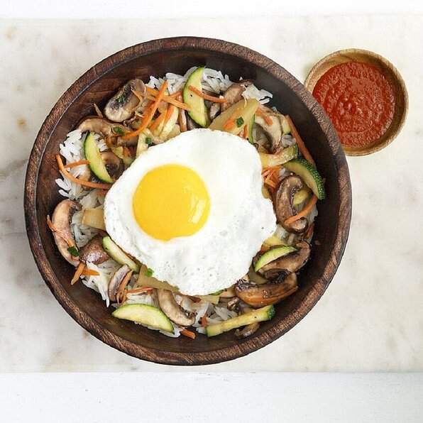

Bibimbap

Description
I created this recipe from looking at a few different ones online and choosing my favorite aspects of each. This is
vegetarian but there are many bibimbap recipes with beef or chicken marinades, if you want to add beef or chicken to
this dish.
Ingredients
- 2 tablespoons sesame oil
- 1 cup carrot matchsticks
- 1 cup zucchini matchsticks
- ½ (14 ounce) can bean sprouts, drained
- 6 ounces canned bamboo shoots, drained
- 1 (4.5 ounce) can sliced mushrooms, drained
- ⅛ teaspoon salt to taste
- 2 cups cooked and cooled rice
- ⅓ cup sliced green onions
- ¼ teaspoon ground black pepper
- 1 tablespoon butter
- 3 eggs
- 3 teaspoons sweet red chili sauce, or to taste
Steps
- Heat sesame oil in a large skillet over medium heat; cook and stir carrot and zucchini in the hot oil until vegetables
begin to soften, about 5 minutes. Stir in bean sprouts, bamboo shoots, and mushrooms. Cook and stir until carrots are
tender, about 5 more minutes. Season to taste with salt and set vegetables aside.
- Stir cooked rice, green onions, soy sauce, and black pepper in the same skillet until the rice is hot. In a separate
skillet over medium heat, melt butter and gently fry eggs, turning once, until the yolks are still slightly runny but
the egg whites are firm, about 3 minutes per egg.
- To serve, divide hot cooked rice mixture between 3 serving bowls and top each bowl with 1/3 of the vegetable mixture and
a fried egg. Serve sweet red chili sauce on the side for mixing into bibimbap.
Return to top
Main Page